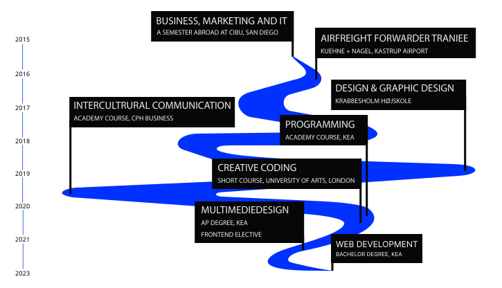

SIMONE
SIMONE
MIAR
MIAR
FRONTEND
FRONTEND
DEVELOPMENT
DEVELOPMENT
GET TO KNOW ME
WHO AM I?
Hello, I’m Simone, a multimediadesign student who is striving to specialize within frontend development. Born and still based in Copenhagen, 27 years old and with a background in the logistic industry.
When I'm not on my computer I work as a bartender, like to play drums and am currently into typography
Throughout my education I have worked within many fields of the digital industry and coding was from the beginning a clear winner. Regarding my skills within coding I find myself very comfortable with: HTML, CSS, SASS and Vanilla js. In addition I’m currently trying to exploring React, Tailwind CSS, GSAP and consistently curious to learn something new.
TECHNOLOGIES

PAST, PRESENT, FUTURE
Looking back at the past, my education as a freight forwarder has taught me to be structured, to always have a problem-solving mindset and to be a good communicator. Looking at the present, my multidisciplinary background has made me well equipped to handle the challenges of the frontend development industry. Regarding the future, I am extremely curious to see where my internship takes me and then continue on webdevelopment degree in 2023, possibly with a student job.
Below is a visual timeline of my educations:
